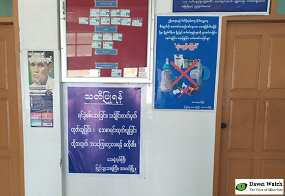

ရင်ခွဲစစ်ဆေးချိန်တွင် ငွေတောင်းက ဆေးရုံအုပ်ကြီးထံ တိုင်ပါ

ဓာတ်ပုံ - ကိုဇော်
ထားဝယ်ပြည်သူ့ဆေးရုံကြီး၌ ရင်ခွဲ စစ်ဆေးရာတွင် အခငွေကြေး တောင်းခံပါက လာရောက်တိုင်ကြား နိုင်ကြောင်း အထက်ပါဆေးရုံမှ ဆေးရုံအုပ်ကြီး ဒေါက်တာမျိုးမင်းက ပြောသည်။
သေဆုံးလူနာအား ရင်ခွဲစစ်ဆေးရာတွင် အခငွေကြေးမတောင်းရန် ညွှန်ကြားထားပြီး တောင်းခံမှုရှိပါက ၎င်း၏ ရုံးခန်းသို့ လာရောက်ကာ တိုက်ရိုက် တိုင်ကြားနိုင်ကြောင်း ၎င်းက ဆိုသည်။
မှုခင်းနှင့် သက်ဆိုင်သည့်သေဆုံးမှု နှင့် ဆေးရုံတက်ပြီး ၂၄ နာရီအတွင်း သေဆုံးသူ၏ ရောဂါရာဇဝင်ကို မသိပါက မဖြစ်မနေ ရင်ခွဲစစ်ဆေးရကြောင်း ဒေါက်တာမျိုးမင်းက ရှင်းပြသည်။
ယင်းသို့သော သေဆုံးမှုများနှင့် ပတ်သက်၍ ဆေးရုံတွင် ရင်ခွဲစစ်ဆေးခြင်း၊ ပြန်ချုပ်ခြင်းကို အခမဲ့လုပ်ဆောင် ပေးကြောင်း ၎င်းက ဆိုသည်။
“ဝန်ထမ်းဖြစ်တဲ့အတွက် အစိုးရလခ လည်း စားပြီးပြီ။ ဒါဟာလုပ်ရမယ့် တာဝန်ပဲ”ဟု ဒေါက်တာမျိုးမင်းက ပြောသည်။
ငွေကြေးတောင်းခံကြောင်း တိုင်ကြား မှုရှိပါက စိစစ်မည်ဖြစ်ပြီး ပေါ်ပေါက်ပါက ထိရောက်စွာအရေးယူမည်ဖြစ် ကြောင်း ၎င်းက ဆိုသည်။
သို့ရာတွင် အလောင်းပိုင်ရှင်က ကြည်ဖြူ၍ ငွေကြေးပေးသည့်ကိစ္စကိုမူ မပြောလိုကြောင်း ဒေါက်တာမျိုးမင်းက ပြောသည်။
ရင်ခွဲစစ်ဆေးခြင်းအပြင် သင်္ချိုင်း လက်မှတ်ထုတ်ယူခြင်း၊ သေစာရင်းထုတ် ယူခြင်းတို့အတွက်လည်း အခကြေးငွေ ပေးရန်မလိုကြောင်း ထားဝယ်ဆေးရုံ ကြီးတွင် စာကပ်ကြေညာထားသည်။
Dawei Watch